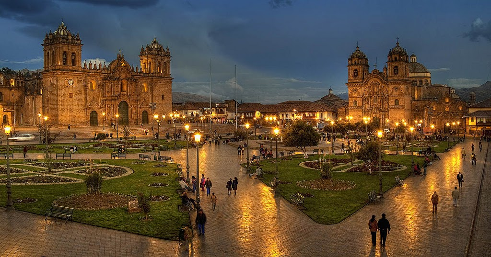
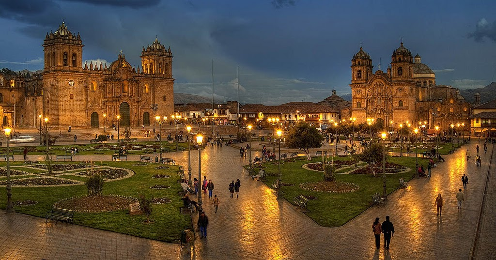

Viaje a Cuzco
Fue una bonita experiencia inolvidable recorriendo Plaza de Armas ,cristo blanco,sacsayhuaman, y todos los sitios arqueologicos,templos de la ciudad de Cuzco.
Fue una bonita experiencia inolvidable recorriendo Plaza de Armas ,cristo blanco,sacsayhuaman, y todos los sitios arqueologicos,templos de la ciudad de Cuzco.
